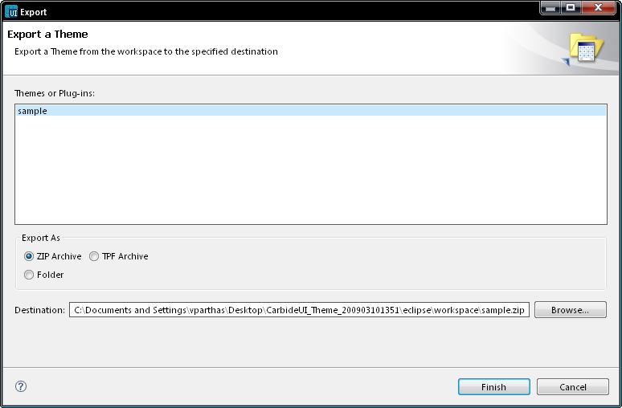

Exporting themes
Follow the instructions below to export a theme:-
In the menu bar, select File ->
Export.
The Export
wizard opens.
In the Theme select a theme which you want to export, select the
destination for your export.
You can choose the Export As format the available options ( ZIP archive, TPF Archive
or Folder).
Click Finish.

Figure:
Export Theme